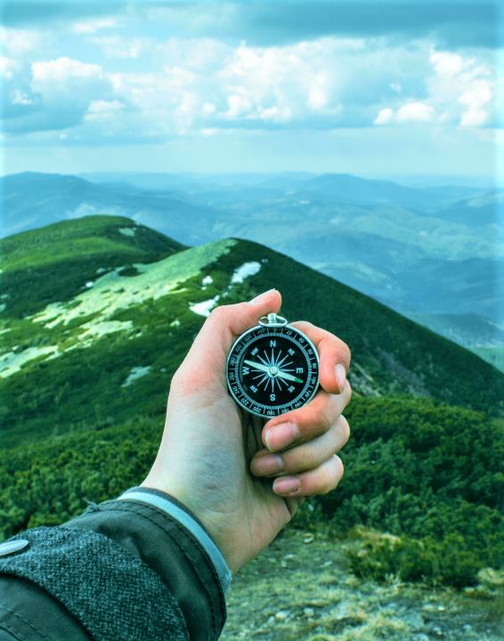

01
Get Started
What level of hiker are you?
Determining what level of hiker you are can be an important tool
when planning future hikes. This hiking level guide will help
you plan hikes according to different hike ratings set by
various websites like All Trails and Modern Hiker. What type of
hiker are you – novice, moderate, advanced moderate, expert, or
expert backpacker?
read more
02
Hiking Essentials
Picking the right Hiking Gear!
The nice thing about beginning hiking is that you don’t really
need any special gear, you can probably get away with things you
already have. Let’s start with clothing. A typical mistake
hiking beginners make is wearing jeans and regular clothes,
which will get heavy and chafe wif they get sweaty or wet.
read more
03
where you go is the key
Understand Your Map & Timing
To start, print out the hiking guide and map. If it’s raining,
throw them in a Zip-Lock bag. Read over the guide, study the
map, and have a good idea of what to expect. I like to know what
my next landmark is as I hike. For example, I’ll read the guide
and know that say, in a mile, I make a right turn at the
junction..
read more
